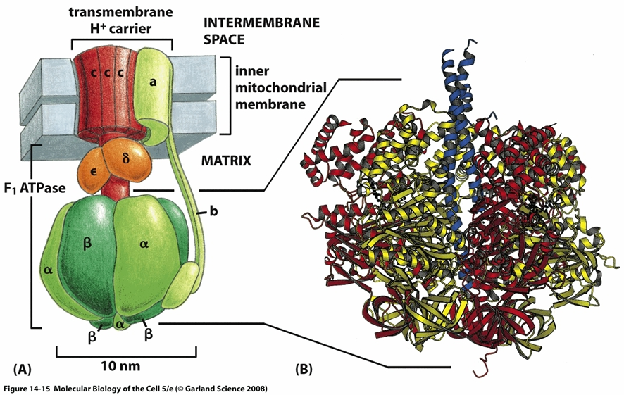

Micro-Bio-Battery
Design
Generation of pH differnce with transfer of calcium ion using ionophore
Two different types of droplets are prepared in water in oil emulsion(=W/O emulsion). One of which is made by inserting a great amount of fluorescent ion beads charged with calcium ion inside the droplet. (=droplet-A) The other droplet is created by inserting calcium indicator instead. (=droplet-B) After preparation, both droplets are brought near and joined. Ionomycin is then added to the oil phase of the W/O emulsion.
Near the surface of droplet-A, each ionomycin molecule in the W/O emulsion exchanges its hydrogen ions with a calcium ion inside droplet-A, i.e., it releases its hydrogen ions into droplet-A and captures a calcium ion. Since the calcium ion concentration of droplet-A is much higher than that of droplet-B, by the law of entropy increase, calcium ions captured by ionomycin are transferred from droplet-A to droplet-B as follows. Due to its membrane permeability, ionomycin with calcium ions goes into the junction of the two droplets surrounded by the hydrophobic part of lipid. It then permeates into droplet-B.

Inside droplet-B, ionomycin releases calcium ions and exchanges them with hydrogen ions (protons) generated by ionization of water.

After releasing calcium ions, ionomycin floats into the W/O emulsion as before. This process is repeated until the concentrations of calcium ions in both droplets-A and -B become equal. As a whole, droplet-A becomes acidic because hydrogen ions flow in and droplet-B becomes basic because hydrogen ions flow out. As a result, the pH-value of droplet-A decreases and that of droplet-B increases, thus generating pH difference between the two.
Future
With the help of F0F1-ATPase, this device will produce ATP.
The picture of F0F1-ATPase shows below(Excerpted from Molecular Biology of the Cell 5/e[2]).

F0F1ATPase is central enzyme of ATP synthesis of all living things. This enzyme exists in mitochondrial inner membranes, chloroplast thylakoid membranes, bacteria plasma membranes and chromatophore of photosynthetic bacteria which are called energy productional biological membranes and synthesizes ATP by using protontransport in electron transport chain[1].
F0F1ATPase is complex of protein subunits which have a lot of functions.
The part called F1 is in charge of catalysts of ATP synthesis and hydrolysis and sensing concentration of ATP and ADP. The part called F0 penetrates membrane as way through which proton passes[1].
By using proton gradient we made in this experiment with this F0F1ATPase, we will produce ATP.
All living things from bacteria to human beings use ATP (Adenosine Triphosphate) as energy source. So it can be said that this device works as a battery in our body in that it supplies ATP, i.e., the energy source of all biological activities.
References